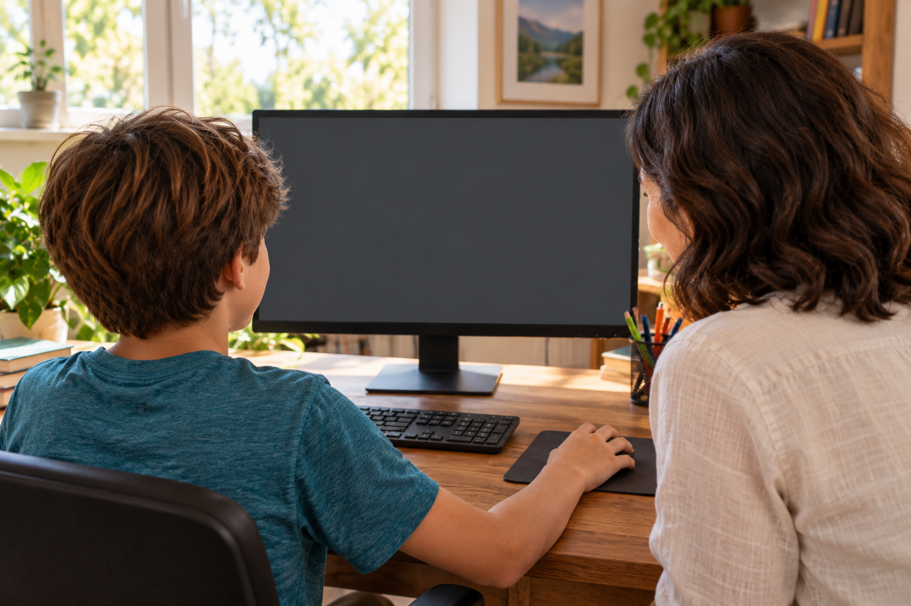

Antes de escolher
Seu filho adorou a primeira aula.
Antes de contratar, veja também o que vem depois.
Seu filho adorou a primeira aula.
Antes de contratar, veja também o que vem depois.
A novidade chama atenção.
Para conhecer melhor a proposta, procure entender como a criança continua o projeto e recebe ajuda.
Pergunte o que ela vai construir primeiro e o que poderá acrescentar depois.
Assim, você consegue enxergar o caminho da atividade.
Neste jogo, um astronauta recolhe moedas na Lua.
Ao juntar todas, aparecem fogos para comemorar.
A criação pode ser dividida em partes: fazer o astronauta andar, recolher uma moeda e contar as que ele pegou.
Cada teste mostra o que já está funcionando.
Depois, entram outras escolhas: onde colocar as moedas e o que acontece quando o jogador termina.
A criança tem novas partes para construir e experimentar.
Ao avaliar um curso, veja essa continuação e a orientação disponível quando seu filho precisa de ajuda.
Converse também com ele sobre o que gostaria de criar.
Aqui mostramos o que acontece ao aprender criando jogos.

Siga o perfil para conhecer mais exemplos.